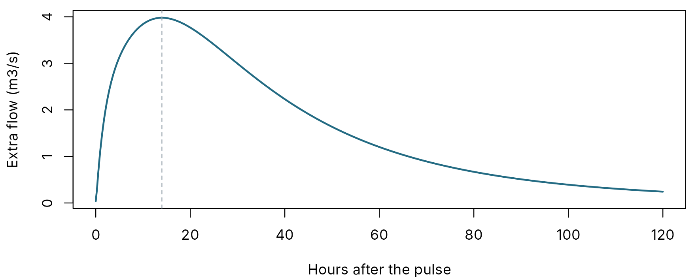
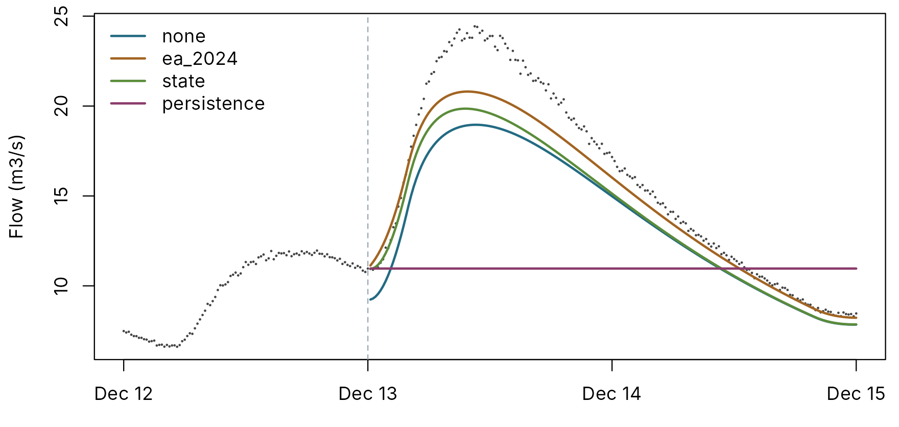
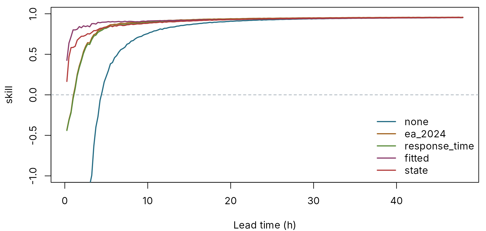
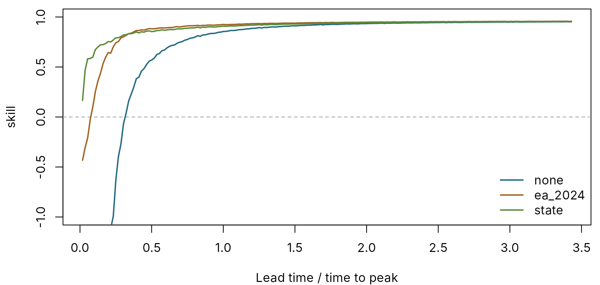

A simulation score says how well a model reproduces a whole record. A forecaster needs to know something else: from the moment a forecast is issued, how good is it one hour ahead, six hours ahead, two days ahead? A hindcast answers that by rerunning the past as if it were live. pdmS7 picks forecast origins through a period, forecasts from each, and scores every lead time separately.
Two choices keep the comparison honest:
- Rain. The forecast rain is the rain that actually fell. The scores then measure the model and its updating, not the rainfall forecast. An LSTM given the same origins and the same rain can be scored by the same function.
- Persistence. Every hindcast includes the forecast “the river stays where it is now”. It costs nothing, and it is hard to beat at short lead times. Skill is measured against it: 0 means no better than persistence, 1 means perfect.
The example
Four months of 15-minute data from a made-up 80 km2 catchment. The model is deliberately imperfect: its rainfall factor is low, and its stores respond at the wrong speed. The observations carry 1 per cent noise, like a real gauge.
set.seed(42)
n <- 4 * 24 * 120
time <- seq(as.POSIXct("2024-10-01", tz = "UTC"), by = 900, length.out = n)
wet <- stats::runif(n / 16) < 0.12
rain <- rep(ifelse(wet, stats::rgamma(n / 16, 0.8, scale = 2.5), 0), each = 16) / 4
forcing <- data.frame(time = time, rain = rain, pet = 0.01)
truth <- pdm_model(area_km2 = 80, fc = 1.1, dt = 0.25,
surface = FlodeCascadeRouting(k1 = 3, k2 = 5),
groundwater = cubic_routing(kb = 6000))
observed <- run_pdm(truth, forcing, initial_state_from_flow(truth, 1.5, 0.7))$output$q_m3s *
exp(stats::rnorm(n, 0, 0.01))
model <- pdm_model(area_km2 = 80, fc = 0.95, dt = 0.25,
surface = FlodeCascadeRouting(k1 = 2, k2 = 4),
groundwater = cubic_routing(kb = 9000))
half <- n / 2The first two months stand in for the calibration period, the last two for the period we test.
Step 1: the catchment’s response time
How quickly does the catchment respond?
pdm_response_time() answers by experiment. It starts the
model in a steady state at a chosen flow, drops a single pulse of rain
on it, and traces the extra flow that comes out. Because it asks the
calibrated model, the answer reflects the calibration, whatever the
structure.
high <- unname(stats::quantile(observed, 0.9))
rt <- pdm_response_time(model, flow = high, feh_time_to_peak_h = 9)
round(unlist(rt[c("time_to_peak_h", "recession_h", "centroid_lag_h")]), 1)
#> time_to_peak_h recession_h centroid_lag_h
#> 14.0 39.7 51.1
par(mar = c(4, 4.2, 0.6, 0.6))
keep <- rt$response$hours <= 120
plot(rt$response$hours[keep], rt$response$extra_m3s[keep], type = "l", lwd = 2, col = pal[2],
xlab = "Hours after the pulse", ylab = "Extra flow (m3/s)")
abline(v = rt$time_to_peak_h, lty = 2, col = pal[7])
The extra flow from a 10 mm pulse of rain, starting at a high flow.
At a high flow of 10.4 m3/s, the model’s flow peaks 14 hours after
the rain. The answer depends on the flow you choose. A wet catchment
responds faster, because the groundwater store is nonlinear and more of
the rain runs straight off. For forecasting, a typical high flow is the
right choice. pdm_hindcast() uses the 90th percentile of
observed flow unless you give another.
The FEH check. If you have FEH catchment
descriptors, reach.postproc::feh_time_to_peak() gives an
independent time to peak. Here we suppose the descriptors give 9 hours.
The ratio is 1.56, inside the factor of two either way that
pdm_response_time() accepts. A ratio outside it raises a
flag, rt$feh$flag, which is FALSE here. A flag means the
model’s fast stores or the descriptors deserve a look. When the two
disagree, trust the model’s figure for that model: it is what the model
will actually do.
Step 2: AR coefficients
Operationally, IMFS post-processes a simulation with an autoregressive (AR) model of its error. At a forecast origin the latest error is known: the river has been measured. The AR model projects how that error will develop, and the forecast is the simulation plus the projected error. pdmS7 writes the coefficients in the same order and sign as IMFS and reach.postproc, the Deltares convention, so sets can be copied between them unchanged.
ar_ea_default()
#> a_1 a_2 a_3
#> 1.765000 -0.726250 -0.040656
ar_from_response_time(rt$time_to_peak_h, dt = 0.25)
#> a_1 a_2 a_3
#> 1.76500000 -0.72739974 -0.04071351
#> attr(,"roots")
#> [1] 0.98229587 0.83249120 -0.04978707ar_ea_default() is the Environment Agency 2024 default
set, defined for 15-minute steps. ar_from_response_time()
builds a member of the same family from one timescale, using the
construction of
reach.postproc::default_family_ar_parameters() and giving
identical coefficients. Using the time to peak as the decay time of the
forecast error is an approximation, the same one reach.postproc makes.
Treat the result as a starting point: check it with
reach.postproc::assess() and with a hindcast like the one
below.
Step 3: the hindcast
hc <- pdm_hindcast(model, forcing, observed, window = (half + 1):n, every_h = 6,
horizon_h = 48, response_flow = high,
fit_window = (4 * 24 * 14):half, state_correction = state_updater())
names(hc$ar)
#> [1] "ea_2024" "response_time" "fitted"
head(hc$forecasts, 3)
#> origin time lead lead_h method forecast observed
#> <int> <POSc> <int> <num> <char> <num> <num>
#> 1: 5761 2024-11-30 00:00:00 1 0.25 none 2.754628 3.084904
#> 2: 5785 2024-11-30 06:00:00 1 0.25 none 2.490013 2.737598
#> 3: 5809 2024-11-30 12:00:00 1 0.25 none 2.235164 2.465681From every 6th hour in the test period, the hindcast forecasts 48 hours ahead with each method:
| Method | Forecast |
|---|---|
none |
The simulation, without updating |
persistence |
The last observed flow, held |
ea_2024 |
Simulation plus AR, EA 2024 default |
response_time |
Simulation plus AR, from this model’s response time |
fitted |
Simulation plus AR, with coefficients fitted to the calibration period’s errors |
state |
State correction at the origin, then the model run forward |
Nothing from the future leaks in. The simulation runs straight
through without updating, so the forecast from an origin uses
observations up to that origin only. The fitted
coefficients come from the calibration period, not the period being
scored.
f <- as.data.frame(hc$forecasts)
peak_row <- half + which.max(observed[(half + 1):n])
issued <- max(f$origin[f$origin <= peak_row - 4 * 6])
show <- (issued - 4 * 24):(issued + 4 * 48)
par(mar = c(3, 4.2, 0.6, 0.6))
plot(time[show], observed[show], pch = 16, cex = 0.3, col = pal[1], xlab = "",
ylab = "Flow (m3/s)")
methods <- c("none", "ea_2024", "state", "persistence")
for (i in seq_along(methods)) {
one <- f[f$origin == issued & f$method == methods[i], ]
lines(time[one$origin + one$lead], one$forecast, col = pal[i + 1], lwd = 2)
}
abline(v = time[issued], lty = 2, col = pal[7])
legend("topleft", methods, col = pal[2:5], lwd = 2, bty = "n")
One forecast, issued at the dashed line, on the rising limb of a flood. Points: observed flow.
Step 4: scores by lead time
alert <- unname(stats::quantile(observed, 0.95))
scores <- hindcast_scores(hc, thresholds = c(alert = alert))
lead_table <- scores[scores$lead_h %in% c(0.25, 1, 3, 6, 12, 24, 48),
c("method", "lead_h", "nse", "skill", "csi:alert")]
knitr::kable(data.table::dcast(data.table::as.data.table(lead_table), lead_h ~ method,
value.var = "skill"), digits = 2,
caption = "Skill against persistence, by lead time in hours")| lead_h | ea_2024 | fitted | none | persistence | response_time | state |
|---|---|---|---|---|---|---|
| 0.25 | -0.43 | 0.43 | -93.08 | 0 | -0.44 | 0.17 |
| 1.00 | -0.02 | 0.80 | -17.51 | 0 | -0.05 | 0.58 |
| 3.00 | 0.64 | 0.84 | -1.12 | 0 | 0.62 | 0.75 |
| 6.00 | 0.87 | 0.90 | 0.46 | 0 | 0.86 | 0.85 |
| 12.00 | 0.92 | 0.91 | 0.82 | 0 | 0.90 | 0.90 |
| 24.00 | 0.94 | 0.94 | 0.93 | 0 | 0.94 | 0.94 |
| 48.00 | 0.96 | 0.95 | 0.95 | 0 | 0.95 | 0.96 |
par(mar = c(4, 4.2, 0.6, 0.6))
plot_hindcast(scores, "skill", methods = c("none", "ea_2024", "response_time", "fitted",
"state"),
col = pal[2:6], ylim = c(-1, 1))
Skill against persistence, cut off at -1. Above the dashed line, a method beats persistence. The simulation without updating starts far below the chart, at -93.
What the table and chart show:
- Without updating, the model loses to persistence for the first few hours. Its skill at 15 minutes is -93: a big negative number, because persistence is almost perfect one step ahead. The simulation first beats persistence at 4.5 hours. That is the gap updating fills.
- The fixed AR sets close most of the gap. The EA 2024 default reaches skill 0.64 at 3 hours, against -1.12 without updating. In the first hour it is no better than persistence, with skill -0.43 at 15 minutes and -0.02 at 1 hour: the AR projects the latest error forward, and with noisy observations part of that error is gauge noise. The response-time set behaves almost identically: the EA default is close to the family member for a 24-hour decay, and the family changes little between that and this model’s 14 hours.
-
AR fitted to this model’s own errors does best at short lead
times. Its coefficients, 0.47, 0.28, 0.25, were fitted to the
calibration period alone, yet it reaches skill 0.8 at 1 hour and 0.84 at
3 hours. It works here because the model’s errors are systematic, the
same wrong rainfall factor and store speeds in both periods. Real errors
vary more from flood to flood. A fit over a whole record is also
weighted towards quiet weather, and the floods are what matter. Before
trusting a fitted set, check it on held-out events, or fit on events
only with
reach.postproc::fit_ar_from_events()and pass the result in throughar, as inar = list(events = c(a_1 = ..., a_2 = ..., a_3 = ...)). - State correction beats persistence from the first step, with skill 0.17 at 15 minutes and 0.58 at 1 hour, because it moves the model’s stores rather than projecting the error. Operationally IMFS uses AR post-processing, so treat this as a comparison, not a recommendation.
- At long lead times every method converges on the simulation. The AR correction has decayed, and skill against persistence is high because persistence itself has become poor. NSE is the better guide there: 0.936 for the simulation at 48 hours.
Thresholds. With thresholds, each lead
time also gets step-based POD, FAR and CSI: at that lead, was the
forecast above the threshold when the river was? At the 95th-percentile
flow of 13.1 m3/s, the CSI at 6 hours is 0.63 for persistence, 0.64 for
the simulation and 0.95 with the EA 2024 AR.
Comparing catchments: lead time over response time
Six hours ahead is a long way on a flashy upland stream and a short
way on a chalk river. hindcast_scores() therefore also
gives lead_ratio, the lead time divided by the model’s time
to peak. Plotted against that ratio, many catchments, and the PDM and an
LSTM on the same catchment, line up on one axis. It then becomes visible
whether forecast skill runs out at a common fraction of the response
time.
par(mar = c(4, 4.2, 0.6, 0.6))
plot_hindcast(scores, "skill", ratio = TRUE, methods = c("none", "ea_2024", "state"),
col = pal[2:4], ylim = c(-1, 1))
The same skill, against lead time as a fraction of the time to peak.
For many catchments, run pdm_hindcast() on each, bind
the hindcast_scores() tables with a catchment column, and
plot or summarise against lead_ratio.
Scoring another model’s forecasts
hindcast_scores() also accepts a plain table of
forecasts, with columns origin, lead_h,
method, forecast and observed,
including persistence rows. A forecast LSTM run from the
same origins with the same rain can be added as one more
method and scored on exactly the same footing.
lstm <- data.frame(origin = ..., lead_h = ..., method = "lstm", forecast = ...,
observed = ...)
both <- rbind(hc$forecasts[, c("origin", "lead_h", "method", "forecast", "observed")], lstm)
hindcast_scores(both, response_time_h = hc$response_time$time_to_peak_h)Summary
| Step | Function |
|---|---|
| How fast does the catchment respond? |
pdm_response_time(), with an optional FEH check |
| AR coefficients |
ar_ea_default(), ar_from_response_time(),
or your own |
| Rerun past forecasts | pdm_hindcast() |
| Score by lead time, against persistence | hindcast_scores() |
| Plot |
plot_hindcast(), in hours or as a fraction of the time
to peak |
Forecast updating explains the two updating methods themselves.